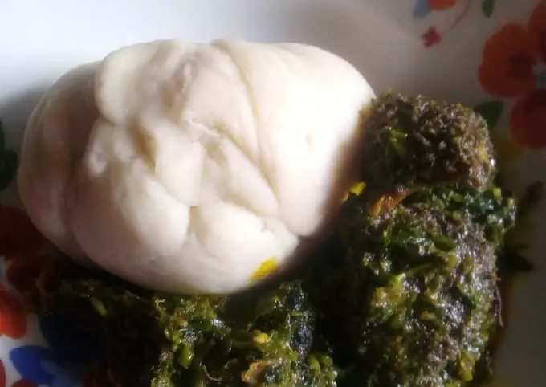

Afang soup with pounded yam

Description
The Nigerian Afang Soup, like the Edikang Ikong soup, is native
to the Efiks, people of Akwa Ibom and Cross River states of
Nigeria but enjoyed. Afang Soup is a nutritious soup made with
Afang leaves/Okazi leaves,water leaves&assorted meat. Learn
how to cook this Rich soup. Afang soup is one of the richest and
somewhat medicinal vegetable soups of the Efiks/Ibibios in Nigeria
Ingredients
- You need a tuber of Yam.
- 400g sliced Okazi/Afang leaves | about 4 handfuls
- 250g Water leaves
- 20 to 25 cl red palm oil (about 1 drink glass)
- Beef, Kanda and Dry fish
- 2 tablespoons ground crayfish
- Pepper and salt (to taste)
- 2 stock cubes
- Great alternative to water leaves is Lamb's Lettuce, known as Canonigos
in Spanish.
Steps
- Peel and cut the yam and boil when is soft,pound until
no lump is found.put in a plate.
- Cut and boil the cowleg well seasoned.amd no stock
in it wash and slice the waterleaves pour inside with
oil and cook untill the water
reduces,crayfish,pepper,salt,okpei and star
cubes.when all is well cooked blend the ukazi in stir
very well cook for a while and finally is the ugu.
- Ugu should not be much stir very well and soup is
ready.